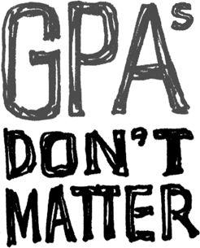

{% include JB/setup %}
{% raw %}
<div>

<h2 id="filepos207438" class="calibre19"><span class="calibre2"><a class="calibre13"></a><strong class="calibre14">Years of irrelevance</strong></span></h2><div class="calibre4"></div>
<p class="calibre7">We've all seen job ads that say, "Five years of experience required." That may give you a number, but it tells you nothing.</p>
<p class="calibre17">Of course, requiring some baseline level of experience can be a good idea when hiring. It makes sense to go after candidates with six months to a year of experience. It takes that long to internalize the idioms, learn how things work, understand the relevant tools, etc.</p>
<p class="calibre17">But after that, the curve flattens out. There's surprisingly little difference between a candidate with six months of experience and one with six years. The real difference comes from the individual's dedication, personality, and intelligence.</p>
<p class="calibre17">How do you really measure this stuff anyway? What does five years of experience mean? If you spent a couple of weekends experimenting with something a few years back, can you count that as a year of experience? How is a company supposed to verify these claims? These are murky waters.</p>
<p class="calibre17">How long someone's been doing it is overrated. What matters is how <em class="italic1">well</em> they've been doing it.</p>
<p class="calibre3"><a class="calibre16"></a></p><div class="calibre4"></div>
<div class="mbppagebreak" id="calibre_pb_134"></div></div>

{% endraw %}

